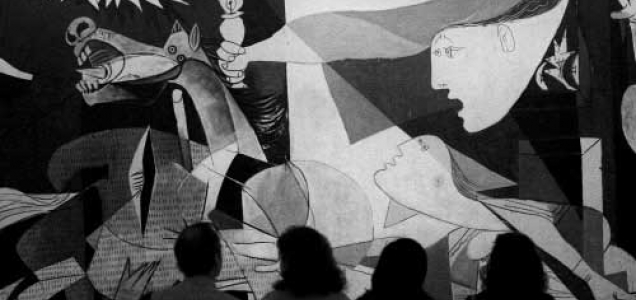

1. Introducción
Vamos a practicar un poco de todo lo visto estos últimos días. Espero que hayáis aprendido mucho y que el año que viene tengáis las mismas ganas de aprender que éste. ¡Feliz Navidad!
2. Lotería primitiva y ONCE
¿Sabrías encontrar los últimos números premiados de la Lotería Primitiva y de la ONCE?

3. Maravillas del mundo antiguo.
El otro día me hablaron de la estatua del Coloso de Rodas que existió hace muchos años y que forma parte de las consideradas Siete Maravillas del Mundo Antiguo. ¿Sabrías encontrar cuáles eran las otras maravillas?
4. Pirámide de Guiza.
Despues de encontrar las siete maravillas, te ha picado la curiosidad por alguna de ellas. ¿Sabrías encontrar fotos de la Pirámide de Guiza y encontrar dónde está ubicada?
¿Cuál es el enlace más interesante?
5. Guernica.
¿Podrías encontrar en qué museo podemos ver el cuado Guernica de Picasso? ¿Sabrías encontrar también una foto del cuadro?
6. Búsqueda de información de localidades.
Vamos a visitar ahora una de las múltiples páginas que existen en Internet sobre información turística de localidades.
- Conéctate a la página: http://minube.com
- Busca información sobre tu ciudad, pueblo, o una localidad que conozcas bien. ¿Acierta en los sitios que dice que deberíamos visitar?
- Consulta ahora otros sitios para visitar, y las fotos de los lugares más característicos de la zona, por ejemplo: Menorca, La Rioja, La Coruña o Granada.